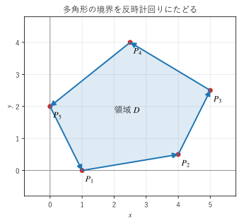
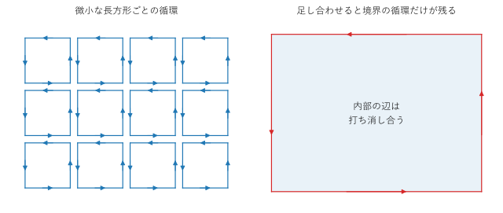

第 13 章 グリーンの定理
1 変数の微分積分学の基本定理 \(\int_a^b f'(x) \, dx = f(b) - f(a)\) は、区間の内部での微分の積分が、区間の端（境界）での値だけで決まることを表している。この章で扱うグリーンの定理は、これを平面の領域に広げたものであり、領域の内部での回転（または発散）の重積分が、境界に沿った線積分に等しいことを主張する。この章では、定理の内容と直観的な説明、循環形と流束形の 2 つの見方、面積の計算への応用を説明し、両辺を数値で計算して一致を確かめる。
平面の領域と境界の向き
グリーンの定理では、平面の有界な領域 \(D\) と、その境界 \(\partial D\) を考える。境界は、いくつかの滑らかな曲線をつないだ閉曲線であるとする。
線積分の値は曲線をたどる向きで符号が変わる（第 11 章）。そこで、境界の向きを次のように決める。
境界の正の向きとは、その向きに進むとき、領域 \(D\) が常に左手側にある向きである。
穴のない領域では、正の向きは反時計回りである。穴のある領域（たとえば円環）では、外側の境界は反時計回り、内側の境界（穴の縁）は時計回りが正の向きになる。どちらの場合も「領域を左に見て進む」という 1 つの規則で決まる。


図 18 多角形の領域と、正の向き（反時計回り）にたどる境界
図 18 は多角形の領域とその境界を描いたものである。頂点を \(P_1, P_2, \ldots, P_5\) の順にたどると、領域は常に左手側にある。
グリーンの定理
平面のベクトル場 \(\bm{F} = (P(x, y), Q(x, y))\) の成分が、領域 \(D\) とその境界を含む範囲で連続な偏導関数を持つとする。このとき、次の式が成り立つ。これをグリーンの定理という。
左辺は境界を正の向きに 1 周する線積分、右辺は領域全体での重積分である。右辺の被積分関数 \(\partial Q / \partial x - \partial P / \partial y\) は、第 7 章で導いた回転の \(z\) 成分そのものである。平面のベクトル場を \(\bm{F} = (P, Q, 0)\) とみなすと、(14) は次のように書ける。
つまり、グリーンの定理は「境界に沿った循環は、内部の回転を足し合わせたものに等しい」ことを表している。
注釈
成分の偏導関数が連続という条件は重要である。領域の中に場が定義されない点（特異点）があると、定理は成り立つとは限らない。この例は第 16 章の自由渦で扱う。
微小な長方形による説明
第 7 章では、微小な長方形 \([x, x + \Delta x] \times [y, y + \Delta y]\) の周を反時計回りに 1 周する循環が、近似的に
になることを見た。これは、グリーンの定理を微小な長方形に適用したものに当たる。
領域 \(D\) を微小な長方形に分割し、各長方形の循環を足し合わせることを考える（図 19）。隣り合う 2 つの長方形が共有する辺は、2 つの長方形で互いに逆向きにたどられる（横の辺なら右向きと左向き、縦の辺なら上向きと下向き）。線積分の値は向きを逆にすると符号が変わるので、共有する辺の寄与は打ち消し合う。その結果、足し合わせた後に残るのは、どの長方形とも共有されない辺、つまり領域の境界に沿った線積分だけである。


図 19 微小な長方形の循環を足し合わせると、境界の循環だけが残る
一方、各長方形の循環は「回転の \(z\) 成分 × 面積」なので、その和は回転の重積分になる。長方形を細かくする極限で、(14) が得られる。曲がった境界は長方形では正確に表せないが、細かくする極限では誤差が 0 に近づく。
長方形の領域では、直接計算しても確かめられる。\(D = [a, b] \times [c, d]\) として、右辺の \(-\partial P / \partial y\) の項を \(y\) について先に積分すると
となる。右辺の第 1 項は下の辺を右向きに、第 2 項は上の辺を左向きにたどる \(\int P \, dx\) である。左右の辺では \(dx = 0\) なので \(P \, dx\) の寄与はない。同じように、\(\partial Q / \partial x\) の項は左右の辺に沿った \(\int Q \, dy\) になる。これらを合わせると、境界を反時計回りに 1 周する線積分になる。
循環形と流束形
グリーンの定理には、もう 1 つの見方がある。(14) の \(P\) を \(-Q\)、\(Q\) を \(P\) に置き換えると
を得る。右辺の被積分関数は \(\bm{F}\) の発散 \(\nabla \cdot \bm{F}\) である。
左辺の意味を考える。境界を正の向きにたどるとき、接線ベクトルの向きの線素は \(d\bm{r} = (dx, dy)\) である。これを時計回りに 90° 回したベクトル \((dy, -dx)\) は、領域の外向きを向き、大きさは線素の長さ \(ds\) に等しい。外向きの単位法線ベクトルを \(\bm{n}\) とすると \(\bm{n} \, ds = (dy, -dx)\) なので
となる。左辺は境界を通って外へ出ていく量（2 次元の流束）である。つまり、「境界から出ていく正味の量は、内部の湧き出しを足し合わせたものに等しい」。これは第 6 章で微小な直方体について考えた流出量を、2 次元の微小な長方形について足し合わせた結果であり、第 14 章のガウスの発散定理の 2 次元版である。
形 |
式 |
意味 |
|---|---|---|
循環形 |
\(\displaystyle \oint_{\partial D} \bm{F} \cdot d\bm{r} = \iint_D (\nabla \times \bm{F}) \cdot \bm{e}_z \, dx \, dy\) |
境界に沿った循環 ＝ 内部の回転の和 |
流束形 |
\(\displaystyle \oint_{\partial D} \bm{F} \cdot \bm{n} \, ds = \iint_D \nabla \cdot \bm{F} \, dx \, dy\) |
境界から出る流束 ＝ 内部の発散の和 |
数値で確かめる
具体的な場で、両辺を別々に数値積分して比べる。場は \(\bm{F} = (x - y^3, x^3 + y)\) とする。
単位円板では、極座標で重積分すると、循環形の右辺は \(\int_0^{2\pi} \int_0^1 3r^2 \cdot r \, dr \, d\theta = 3\pi/2\)、流束形の右辺は \(2 \times (\text{面積 } \pi) = 2\pi\) である。長方形 \([0, 2] \times [0, 1]\) では、それぞれ \(10\) と \(4\) になる。
境界の線積分は、境界を \(t\) でパラメーター表示して、\(P \, dx + Q \, dy = (P \, x'(t) + Q \, y'(t)) \, dt\) を scipy.integrate.quad で積分する。流束形では \(P \, dy - Q \, dx\) を積分する。
31def boundary_integrals(curve: Curve, velocity: Curve, t0: float, t1: float) -> tuple[float, float]:
32 """曲線 curve(t)（t0 <= t <= t1）に沿った循環と、外向きの流束を返す.
33
34 velocity(t) は curve の t による微分 (dx/dt, dy/dt) である。
35 循環は ∫(P dx + Q dy)、流束は ∫(P dy - Q dx) で計算する。
36 """
37 def circulation_integrand(t: float) -> float:
38 p, q = field(*curve(t))
39 dx, dy = velocity(t)
40 return p * dx + q * dy
41
42 def flux_integrand(t: float) -> float:
43 p, q = field(*curve(t))
44 dx, dy = velocity(t)
45 return p * dy - q * dx
46
47 circulation = integrate.quad(circulation_integrand, t0, t1)[0]
48 flux = integrate.quad(flux_integrand, t0, t1)[0]
49 return float(circulation), float(flux)
重積分は scipy.integrate.dblquad で計算する。dblquad は被積分関数を f(y, x) の順で受け取り、内側の変数 \(y\) の範囲を \(x\) の関数で与えられる。単位円板では \(-\sqrt{1 - x^2} \le y \le \sqrt{1 - x^2}\) とする。
F = (x - y^3, x^3 + y)
単位円板
循環形 境界の線積分 = 4.712389 領域の重積分 = 4.712389 (厳密値 3π/2 = 4.712389)
流束形 境界の線積分 = 6.283185 領域の重積分 = 6.283185 (厳密値 2π = 6.283185)
長方形 [0, 2] × [0, 1]
循環形 境界の線積分 = 10.000000 領域の重積分 = 10.000000 (厳密値 10)
流束形 境界の線積分 = 4.000000 領域の重積分 = 4.000000 (厳密値 4)
どちらの領域でも、境界の線積分と領域の重積分が一致している。
サンプルの全体：ch13_green_check.py
面積の計算への応用
グリーンの定理は、重積分を線積分に置き換える道具として使える。特に、\(\partial Q / \partial x - \partial P / \partial y = 1\) となる \(P, Q\) を選ぶと、右辺は領域の面積 \(A\) になる。たとえば \((P, Q) = (0, x)\)、\((-y, 0)\)、\((-y/2, x/2)\) を選ぶと、次の 3 つの式が得られる。
境界の形さえ分かれば、内部を調べなくても面積が求まる。たとえば楕円 \(x = a \cos t\), \(y = b \sin t\)（\(0 \le t \le 2\pi\)）では
となる。
靴ひも公式
多角形の面積は、頂点の座標だけから求められる。頂点 \((x_1, y_1), \ldots, (x_n, y_n)\) を反時計回りに並べ、\((x_{n+1}, y_{n+1}) = (x_1, y_1)\) とする。\((x_i, y_i)\) から \((x_{i+1}, y_{i+1})\) への辺を直線でたどると、その辺での \(\frac{1}{2} \int (x \, dy - y \, dx)\) は \(\frac{1}{2} (x_i y_{i+1} - x_{i+1} y_i)\) になる。これは原点と辺の両端が作る三角形の符号付き面積であり、第 2 章で見た 2 次元の外積の半分に当たる。すべての辺について足し合わせると、次の靴ひも公式を得る。
名前は、\(x_i y_{i+1}\) と \(x_{i+1} y_i\) を組み合わせる計算の形が、靴ひもを交差させて通す様子に似ていることに由来する。頂点を時計回りに並べると、境界を負の向きにたどることになり、値の符号が逆になる。この性質は、CG や GIS（地理情報システム）で多角形の頂点の並びが反時計回りか時計回りかを判定するのにも使われる。
18def shoelace_area(vertices: NDArray[np.float64]) -> float:
19 """靴ひも公式 A = (1/2) Σ (x_i y_{i+1} - x_{i+1} y_i) で多角形の面積を求める.
20
21 頂点が反時計回りなら正、時計回りなら負の値になる。
22 """
23 x = vertices[:, 0]
24 y = vertices[:, 1]
25 x_next = np.roll(x, -1) # x_{i+1}（最後の頂点の次は最初の頂点）
26 y_next = np.roll(y, -1)
27 return float(0.5 * np.sum(x * y_next - x_next * y))
np.roll(x, -1) は配列を 1 つ前にずらし、\(x_{i+1}\) の並びを作る。最後の要素の次は最初の要素になるので、\(x_{n+1} = x_1\) の約束が自然に実現される。図 18 の多角形で、靴ひも公式と線積分の数値積分を比べた結果を示す。
靴ひも公式 = 12.375000
線積分 (1/2)∮(x dy - y dx) = 12.375000
時計回りの頂点で靴ひも公式 = -12.375000
サンプルの全体：ch13_shoelace.py
プラニメーター
プラニメーターは、図面や地図の上で図形の輪郭をなぞるだけで面積を測る機械式の器具である。代表的な極式プラニメーターは、図面に固定する極、2 本の腕、腕に取り付けた測定車輪からなる。輪郭をなぞる腕（長さ \(L\)）の先端を境界に沿って 1 周させると、測定車輪は腕に垂直な方向の動きだけを拾って転がる。車輪の転がり方は腕の位置と向きで決まるので、1 周の間に車輪が転がった距離 \(w\) は、境界に沿ったある線積分で表せる。その線積分にグリーンの定理を適用すると、極が図形の外側にある場合、面積は \(A = L w\) になる。
つまり、プラニメーターは「境界を 1 周する線積分で面積が求まる」というグリーンの定理を、機械で実現したものである。
穴のある領域
円環のように穴のある領域でも、境界の向きを正しく取ればグリーンの定理が成り立つ。外側の境界を \(C_1\)（反時計回り）、内側の境界を \(C_2\)（時計回り）とすると
である。これは、穴のある領域に切れ目を入れて穴のない領域とみなし、切れ目を往復する線積分が打ち消し合うことから導ける。
特に、領域 \(D\) で回転が 0 なら右辺は 0 になる。内側の境界を反時計回りにたどる向きに直すと
となる。回転が 0 の場では、穴を囲む閉曲線を穴の外側でどのように変形しても循環は変わらない。この性質は、第 16 章の自由渦で重要になる。
この章のまとめ
境界の正の向きは、領域を左手側に見て進む向きである。穴のない領域では反時計回りになる。
グリーンの定理（循環形）は、境界に沿った循環が、内部の回転の \(z\) 成分の重積分に等しいことを表す。
定理は、領域を微小な長方形に分け、共有する辺の線積分が打ち消し合うことで理解できる。
流束形では、境界から外へ出る流束が、内部の発散の重積分に等しい。これはガウスの発散定理の 2 次元版である。
\(\partial Q / \partial x - \partial P / \partial y = 1\) となる場を選ぶと、線積分で面積が求まる。靴ひも公式とプラニメーターはこの応用である。